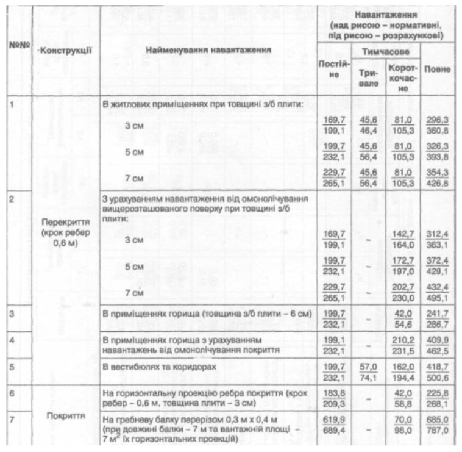

Лабораторна робота №1
Робота з таблицями
Максимчук Владислав АнД-31
13 варіант
Максимчук Владислав АнД-31
13 варіант
створити веб-сторінку з таблицею навантажень на констуркції
| №№ | Констуркції | Найменування навантаження |
Навантаження (над рисою – нормативні, під рисою – розрахункові) |
|||
|---|---|---|---|---|---|---|
| Постій- не |
Тимчасове | Повне | ||||
| Три- вале |
Корот- кочас- не |
|||||
| 1 | Перекриття (крок ребер 0,6 м) |
В житлових приміщеннях при товщині з/б плити: | ||||
| 3 см | 169,7 199,1 |
45,6 46,4 |
81,0 105,3 |
296,3 360,8 |
||
| 5 см | 199,7 232,1 |
45,6 56,4 |
81,0 105,3 |
326,3 393,8 |
||
| 7 см | 229,7 265,1 |
45,6 56,4 |
81,0 105,3 |
354,3 426,8 |
||
| 2 | З урахуванням навантаження від омонолічування вищерозташованого поверху при товщині з/б плити: | |||||
| 3 см | 169,7 199,1 |
– | 142,7 164,0 |
312,4 363,1 |
||
| 5 см | 199,7 232,1 |
– | 172,7 197,0 |
372,4 429,1 |
||
| 7 см | 229,7 265,1 |
– | 202,7 230,0 |
432,4 495,1 |
||
| 3 | В приміщеннях горища (товщина з/б плити 6 см) | 199,7 232,1 |
– | 42,0 54,6 |
241,7 286,7 |
|
| 4 |
В приміщеннях горища з урахуванням навантажень від омонолічування покриття |
199,1 232,1 |
– | 210,2 231,5 |
409,9 462,5 |
|
| 5 | В вестибюлях та коридорах | 199,7 232,1 |
57,0 74,1 |
162,0 194,4 |
418,7 500,6 |
|
| 6 | Покриття |
На горизонтальну проекцію ребра покриття (крок ребер 0,6 м, товщина плити 3 см) |
183,8 209,3 |
– | 42,0 58,8 |
225,8 268,1 |
| 7 |
На гребневу балку перерізом 0,3 м х 0,4 м (при довжині балки 7 м та вантажній площі – 7 м2 їх горизонтальних проекцій) |
619,9 689,4 |
– | 70,0 98,0 |
685,0 787,0 |
|